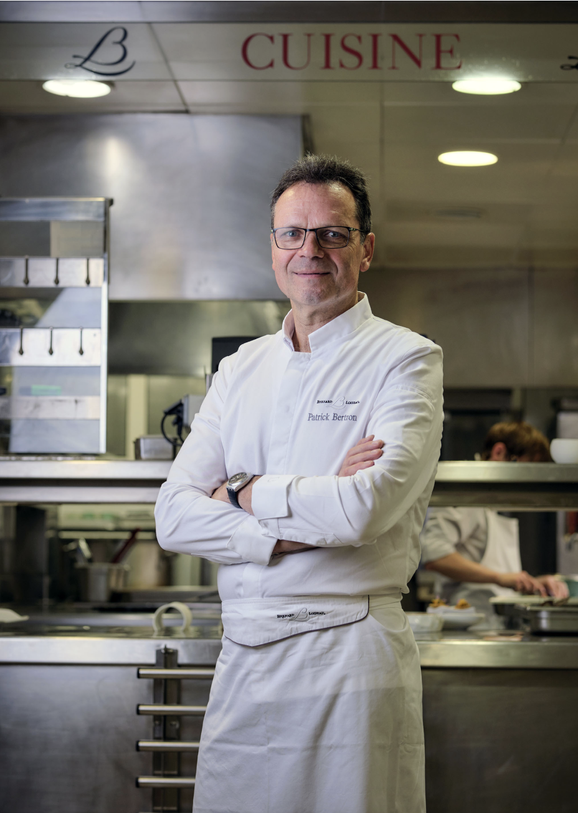

Présentation
Pour Thibaud , Nicolas et Mehdi , la cuisine est une passion.Codeurs le et cuisiniers la nuits,ils ont decidés d'ouvrir un restaurant pour partager leur vision."Les trois manuciens".la cuisine c'est le partage,la rigueur et le respect.C'est également mettre en avant des produits de qualité,valoriser les producteurs de la région pour obtenir une cuisine creative et gourmande.
C'est pendant un projet de groupe que l'idée est venue.Venez découvrir nos délicieux repas et parler code avec nos trois chefs.